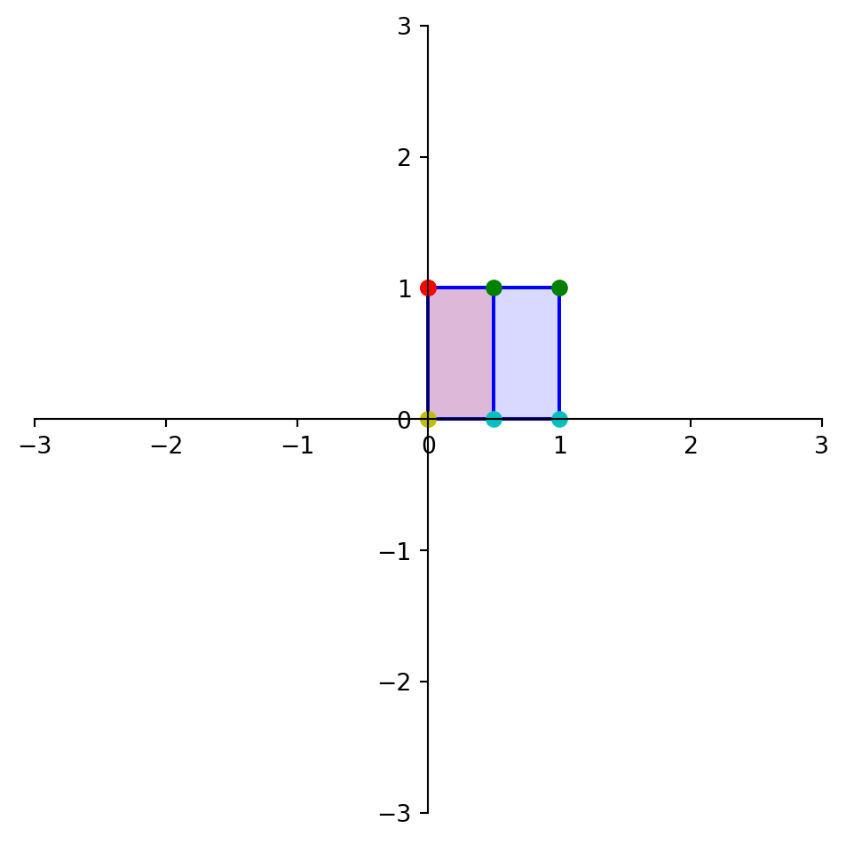
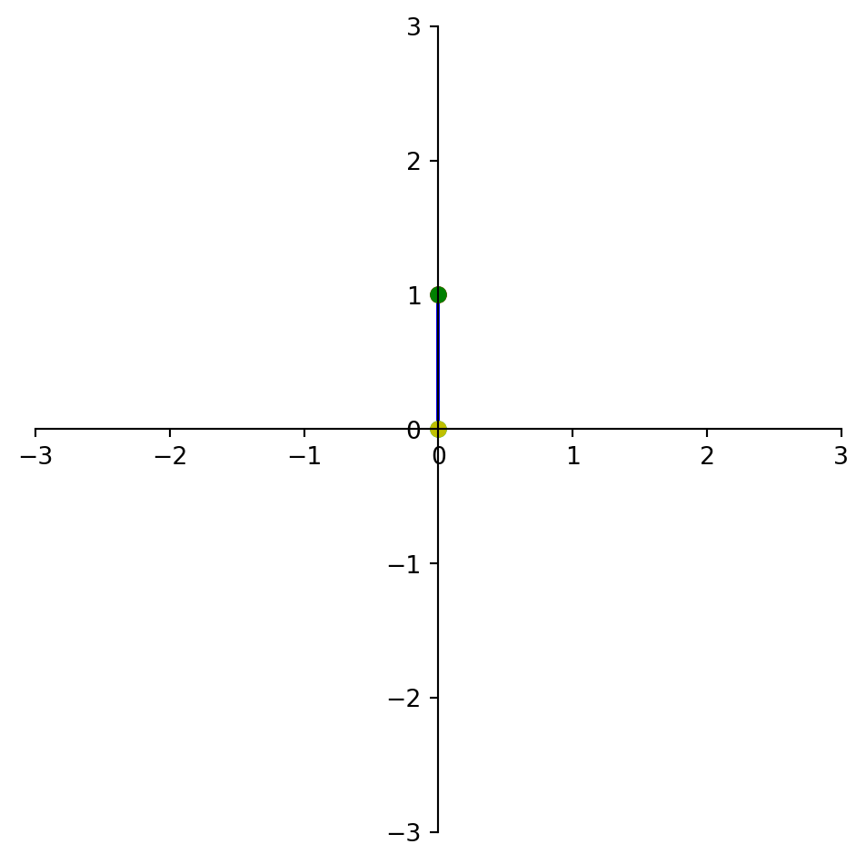
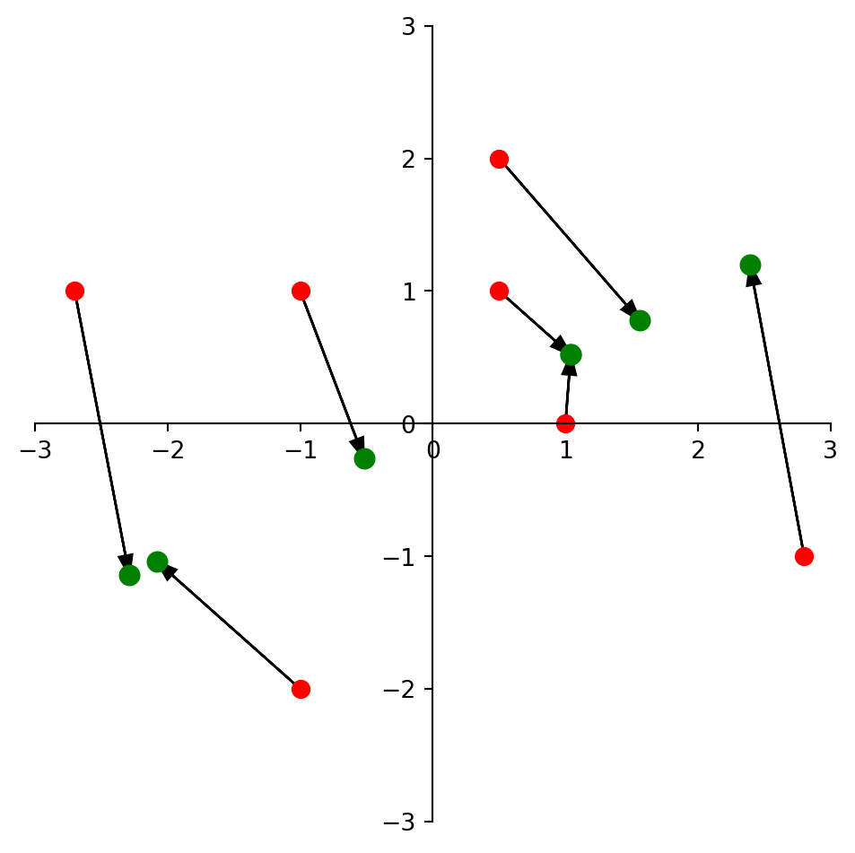

import numpy as np
A = np.array(
[[ 2.0, 5.0],
[-3.0,-7.0]])
print('A =\n',A)
B = np.linalg.inv(A)
print('B = \n',B)A =
[[ 2. 5.]
[-3. -7.]]
B =
[[-7. -5.]
[ 3. 2.]]Many parts of this page are based on Linear Algebra and its Applications, by David C. Lay
Today we investigate the idea of the “reciprocal” of a matrix.
For reasons that will become clear, we will think about this way:
The reciprocal of any nonzero number \(r\) is its multiplicative inverse.
That is, \(1/r = r^{-1}\) such that \(r \cdot r^{-1} = 1.\)
This gives a way to define what is called the inverse of a matrix.
Importantly: we have to recognize that this inverse does not exist for all matrices.
Definition. An \(n\times n\) matrix \(A\) is called invertible if there exists an \(n\times n\) matrix \(C\) such that
\[ AC = I \;\;\text{ and }\;\; CA = I. \]
In that case \(C\) is called the inverse of \(A\).
Clearly, \(C\) must also be square and the same size as \(A\).
The inverse of \(A\) is denoted \(A^{-1}.\)
A matrix that is not invertible is called a singular matrix.
A strange term, but you just have to memorize and get used to it.
Example.
If \(A = \left[\begin{array}{rr}2&5\\-3&-7\end{array}\right]\) and \(C = \left[\begin{array}{rr}-7&-5\\3&2\end{array}\right]\), then:
\[ AC = \left[\begin{array}{rr}2&5\\-3&-7\end{array}\right]\left[\begin{array}{rr}-7&-5\\3&2\end{array}\right] = \left[\begin{array}{rr}1&0\\0&1\end{array}\right],\]
and:
\[ CA = \left[\begin{array}{rr}-7&-5\\3&2\end{array}\right]\left[\begin{array}{rr}2&5\\-3&-7\end{array}\right] = \left[\begin{array}{rr}1&0\\0&1\end{array}\right],\]
so we conclude that \(C = A^{-1}.\)
Let’s think about what a matrix inverse does in a linear equation.
Take a standard linear equation:
\[ A{\bf x} = {\bf b}. \]
Then:
\[A^{-1}(A{\bf x}) = A^{-1}{\bf b}\]
\[(A^{-1}A){\bf x} = A^{-1}{\bf b}\]
\[I{\bf x} = A^{-1}{\bf b}\]
\[{\bf x} = A^{-1}{\bf b}\]
Theorem. If \(A\) is an invertible \(n\times n\) matrix, then for each \({\bf b}\) in \(\mathbb{R}^n,\) the equation \(A{\bf x} = {\bf b}\) has the unique solution \(A^{-1}{\bf b}.\)
Proof. Follows directly from the definition of \(A^{-1}.\)
This very simple, powerful theorem gives us a new way to solve a linear system.
Furthermore, this theorem connects the matrix inverse to certain kinds of linear systems.
We know that not all linear systems of \(n\) equations in \(n\) variables have a unique solution.
Such systems may have no solutions (inconsistent) or an infinite number of solutions.
But this theorem says that if \(A\) is invertible, then the system has a unique solution.
Wonderful - so to solve a linear system, we simply need to compute the inverse of \(A\) (if it exists)!
Well … how do we do that?
Before answering this question for arbitrary matices, I will answer it for the special case of \(2 \times 2\) matrices.
Theorem. Let \(A\) = \(\left[\begin{array}{rr}a&b\\c&d\end{array}\right].\)
If \(ad-bc \neq 0\), then \(A\) is invertible and \(A^{-1} = \frac{1}{ad-bc}\left[\begin{array}{rr}d&-b\\-c&a\end{array}\right].\)
If \(ad-bc = 0\), then \(A\) is not invertible.
Notice that this theorem tells us, for \(2\times 2\) matrices, exactly which ones are invertible.
Namely: those which have \(ad-bc \neq 0\).
Of course, we recognize the quantity \(ad-bc\)!
It is the determinant of \(A\).
Example. Given a \(2\times 2\) matrix \(A\), if the columns of \(A\) are linearly dependent, is \(A\) invertible?
Solution. If the columns of \(A\) are linearly dependent, then at least one of the columns is a multiple of the other.
Let the multiplier be \(m.\)
Then we can express \(A\) as: \(\left[\begin{array}{rr}a&ma\\b&mb\end{array}\right].\)
The determinant of \(A\) is \(a(mb) - b(ma) = 0.\)
So a \(2\times 2\) matrix with linearly dependent columns is not invertible.
OK, now let’s look at a general method for computing the inverse of \(A\).
Recall our definition of matrix multiplication: \(AB\) is the matrix formed by multiplying \(A\) times each column of \(B\).
\[ AB = [A{\bf b_1} \; \dots \; A{\bf b_n}]. \]
Let’s look at the equation
\[AA^{-1} = I.\]
Let’s call the columns of \(A^{-1}\) = \([{\bf x_1}, {\bf x_2}, \dots, {\bf x_n}].\)
We know what the columns of \(I\) are: \([{\bf e_1}, {\bf e_2}, \dots, {\bf e_n}].\)
So:
\[ AA^{-1} = A[{\bf x_1}, {\bf x_2}, \dots, {\bf x_n}] = [{\bf e_1}, {\bf e_2}, \dots, {\bf e_n}].\]
Notice that we can break this up into \(n\) separate problems:
\[ A{\bf x_1} = {\bf e_1} \] \[ A{\bf x_2} = {\bf e_2} \] \[ \vdots \] \[ A{\bf x_n} = {\bf e_n} \]
(This is a common trick … make sure you understand why it works!)
So here is a general way to compute the inverse of \(A\):
If any of the systems are inconsistent or has an infinite solution set, then \(A^{-1}\) does not exist.
In fact, the above procedure is equivalent to the following:
Thus, when we perform Matrix Inversion on an \(n\times n\) matrix, we are row reducing a \(n\times 2n\) matrix.
This increased size results in the operation count of matrix inversion being \(\sim 2n^3.\)
(To see a derivation of this, check the lecture notes.)
This fact will be important!
Here is more detail on the operation count of Matrix Inversion.
To do Matrix inversion, we perform row reduction on \([A I]\) to obtain \([I A^{-1}]\) as just described. Since \([A I]\) is \(n\times 2n\), the forward elimination step is \(\sim\frac{5}{3}n^3\) and the backsubstitution step is \(\sim\frac{1}{3}n^3\).
In more detail:
If you go back to the derivation of the cost of Gaussian Elimination in Lecture 3, you need to extend the diagram. It is no longer \(n\times(n+1)\) but now is \(n\times 2n\). Then for the forward elimination phase of matrix inversion, you get:
\[ 2\sum_{k=1}^n (k-1)(k+n) = 2\sum_{k=1}^n k^2 + (n-1)k - n\]
flops.
If you expand this out, and use standard formulas for sums (eg, see https://brilliant.org/wiki/sum-of-n-n2-or-n3/), you will get the high order term of \(\sim\frac{5}{3}n^3.\)
Now, for the back substitution phase, at the start you have a matrix that is \([U L]\) where \(U\) is upper triangular and \(L\) is lower triangular. To backsubstitute row \(k\) in this matrix, you need
\[2 \sum_{i=1}^{k} i = 2\frac{(k-1)k}{2}\]
flops. So the total for back substitution is
\[ \sum_{k=1}^n k^2 - k \]
whose highest order term is \(\frac{1}{3}n^3\).
So the total operation count of Matrix Inversion is
\[\sim \frac{5}{3}n^3 + \frac{1}{3}n^3 = 2n^3\]
This general strategy leads to an algorithm for inverting any matrix.
However, in this course I will not ask you invert matrices larger than \(2\times 2\) by hand.
Any time you need to invert a matrix larger than \(2\times 2,\) you may use a calculator or computer.
To invert a matrix in Python/numpy, use the function np.linalg.inv(). For example:
import numpy as np
A = np.array(
[[ 2.0, 5.0],
[-3.0,-7.0]])
print('A =\n',A)
B = np.linalg.inv(A)
print('B = \n',B)A =
[[ 2. 5.]
[-3. -7.]]
B =
[[-7. -5.]
[ 3. 2.]]What do you think happens if you call np.linalg.inv() on a matrix that is not invertible?
A = np.array([[2.,4.],[2.,4.]])
np.linalg.inv(A)--------------------------------------------------------------------------- LinAlgError Traceback (most recent call last) Cell In[3], line 2 1 A = np.array([[2.,4.],[2.,4.]]) ----> 2 np.linalg.inv(A) File ~/anaconda3/envs/CS132-quarto/lib/python3.12/site-packages/numpy/linalg/linalg.py:561, in inv(a) 559 signature = 'D->D' if isComplexType(t) else 'd->d' 560 extobj = get_linalg_error_extobj(_raise_linalgerror_singular) --> 561 ainv = _umath_linalg.inv(a, signature=signature, extobj=extobj) 562 return wrap(ainv.astype(result_t, copy=False)) File ~/anaconda3/envs/CS132-quarto/lib/python3.12/site-packages/numpy/linalg/linalg.py:112, in _raise_linalgerror_singular(err, flag) 111 def _raise_linalgerror_singular(err, flag): --> 112 raise LinAlgError("Singular matrix") LinAlgError: Singular matrix
The right way to handle this is:
A = np.array([[2.,4.],[2.,4.]])
try:
np.linalg.inv(A)
except np.linalg.LinAlgError:
print('Oops, looks like A is singular!')Oops, looks like A is singular!Solve the system:
\[\begin{array}{rcl} 3x_1 +4x_2 &=& 3\\ 5x_1 +6x_2 &=& 7 \end{array}\]
Rewrite this system as \(A{\bf x} = {\bf b}:\)
\[ \left[\begin{array}{rr}3&4\\5&6\end{array}\right] {\bf x} = \left[\begin{array}{r}3\\7\end{array}\right].\]
The determinant of \(A\) is \(3(6)-4(5) = -2,\) which is nonzero, so \(A\) has an inverse.
According to our \(2\times 2\) formula, the inverse of \(A\) is:
\[ A^{-1} = \frac{1}{-2}\left[\begin{array}{rr}6&-4\\-5&3\end{array}\right] = \left[\begin{array}{rr}-3&2\\5/2&-3/2\end{array}\right].\]
So the solution is:
\[ {\bf x} = A^{-1}{\bf b} = \left[\begin{array}{rr}-3&2\\5/2&-3/2\end{array}\right]\left[\begin{array}{r}3\\7\end{array}\right] = \left[\begin{array}{r}5\\-3\end{array}\right].\]
Theorem.
\[(A^{-1})^{-1} = A.\]
\[(A^T)^{-1} = (A^{-1})^T.\]
\[(AB)^{-1} = B^{-1}A^{-1}.\]
The first two are straightforward. Let’s verify the last one because it shows some common calculation patterns:
\[(AB)(B^{-1}A^{-1})\]
\[=A(BB^{-1})A^{-1}\]
\[=AIA^{-1}\]
\[=AA^{-1}\]
\[=I.\]
Earlier we saw that if a matrix \(A\) is invertible, then \(A{\bf x} = {\bf b}\) has a unique solution for any \({\bf b}\).
This suggests a deep connection between the invertibility of \(A\) and the nature of the linear system \(A{\bf x} = {\bf b}.\)
In fact, we are now at the point where we can collect together in a fairly complete way much of what we have learned about matrices and linear systems.
This remarkable collection of ten interrelated properties is called the Invertible Matrix Theorem (IMT).
Invertible Matrix Theorem. Let \(A\) be a square \(n\times n\) matrix.
Then the following statements are equivalent; that is, they are either all true or all false:
The arguments above show that if \(A\) is invertible, then all the other statements are true.
In fact, the converse holds as well: if \(A\) is not invertible, then all the other statements are false.
(We will skip the proof of the converse, but it’s not difficult.)
This theorem has wide-ranging implications.
It divides the set of all \(n\times n\) matrices into two disjoint classes:
The power of the IMT lies in the conections it provides among so many important concepts.
For example, notice how it connects linear independence of the columns of a matrix \(A\) to the existence of solutions to equations of the form \(A{\bf x} = {\bf b}.\)
This allows us to bring many tools to bear as needed to solve a problem.
Example.
Decide if \(A\) is invertible:
\[A = \left[\begin{array}{rrr}1&0&-2\\3&1&-2\\-5&-1&9\end{array}\right].\]
Solution.
\[A \sim \left[\begin{array}{rrr}1&0&-2\\0&1&4\\0&-1&-1\end{array}\right] \sim \left[\begin{array}{rrr}1&0&-2\\0&1&4\\0&0&3\end{array}\right].\]
\(A\) has three pivot positions and hence is invertible, by the IMT.
Example.
Decide if \(A\mathbf{x} = \mathbf{b}\) has a solution for all \(\mathbf{b}\):
\[ A = \left[\begin{array}{rr}3 & 7\\-6 & -14\end{array}\right].\]
Solution.
The determinant of \(A\) is \((3 \cdot -14) - (7 \cdot -6) = 0\).
So \(A\) is not invertible, so \(A\mathbf{x} = \mathbf{b}\) does not have a solution for all \(\mathbf{b}\).
Note.
Keep in mind: while the IMT is quite powerful, it does not completely settle issues that arise with respect to \(A{\bf x} = {\bf b}.\)
This is because it only applies to square matrices.
So if \(A\) is nonsquare, then we can’t use the IMT to conclude anything about the existence or nonexistence of solutions to \(A{\bf x} = {\bf b}.\)

A linear transformation \(T: \mathbb{R}^n \rightarrow \mathbb{R}^n\) is invertible if there exists a function \(S: \mathbb{R}^n \rightarrow \mathbb{R}^n\) such that
\[ S(T({\bf x})) = {\bf x}\;\;\;\text{for all}\;{\bf x}\in\mathbb{R}^n,\]
and
\[ T(S({\bf x})) = {\bf x}\;\;\;\text{for all}\;{\bf x}\in\mathbb{R}^n.\]
Theorem.
Let \(T: \mathbb{R}^n \rightarrow \mathbb{R}^n\) be a linear transformation and let \(A\) be the standard matrix for \(T\).
Then \(T\) is invertible if and only if \(A\) is an invertible matrix.
In that case the linear transformation \(S\) given by \(S({\bf x}) = A^{-1}{\bf x}\) is the unique function satisfying the definition.
Let’s look at some invertible and non-invertible linear transformations.
square = np.array([[0.0,1,1,0],[1,1,0,0]])
A = np.array(
[[0.5, 0],
[ 0, 1]])
print(A)
dm.plotSetup()
dm.plotSquare(square)
dm.plotSquare(A @ square,'r')
Latex(r'Horizontal Contraction')[[0.5 0. ]
[0. 1. ]]<IPython.core.display.Latex object>
Here \(A = \left[\begin{array}{rr}0.5&0\\0&1\end{array}\right].\) Its determinant is \(1(0.5)-0(0) = 0.5,\) so this linear transformation is invertible.
Its inverse is:
\[ \frac{1}{0.5}\left[\begin{array}{rr}1&0\\0&0.5\end{array}\right] = \left[\begin{array}{rr}2&0\\0&1\end{array}\right].\]
Clearly, just as \(A\) contracted the \(x_1\) direction by 0.5, \(A^{-1}\) will expand the \(x_1\) direction by 2.
A = np.array(
[[0,0],
[0,1]])
dm.plotSetup()
dm.plotSquare(A @ square)
Latex(r'Projection onto the $x_2$ axis')<IPython.core.display.Latex object>
Here \(A = \left[\begin{array}{rr}0&0\\0&1\end{array}\right].\)
Its determinant is zero, so this linear transformation is not invertible.
By the IMT, there are many equivalent ways to describe this linear transformation:
Here is another example:

In this figure, we are looking at how the red points \((x_1, x_2)\) are mapped to the green points under the transformation
\[ \left[\begin{array}{r} x_1 \\ x_2 \end{array}\right] \mapsto \left[\begin{array}{rr} 1.04 & 0.52 \\ 0.52 & 0.26 \end{array}\right]\left[\begin{array}{r} x_1 \\ x_2 \end{array}\right].\]
We notice a few things:
How do these two facts relate to:
This material is not required, but may interest you.
The notion of a matrix inverse has some complications when used in practice.
As we’ve noted, numerical computations are not always exact.
In particular, we often find that a - b(a/b) does not evaluate to exactly zero on a computer.
For similar reasons, a matrix which is actually singular may not appear to be so when used in a computation.
This happens because, for example, the determinant does not evaluate to exactly zero, even though it should.
Recall that when we were implementing Gaussian elimination, we established a rule:
If a - b(a/b) < epsilon for sufficiently small epsilon, we would treat that quantity as if it were zero.
We need an equivalent rule for matrices, so that we recognize when matrices are “effectively singular.”
When a matrix \(A\) is “effectively singular” we should not try to solve \(A{\bf x} = {\bf b}\).
The value we use for this purpose is called the condition number.
Every matrix has a condition number.
The larger the condition number of a matrix, the closer the matrix is to being singular.
A singular matrix has an infinite condition number.
At the other extreme, the condition number of the identity matrix is 1, which is the smallest possible value.
Here is the point: a matrix with a very large condition number will behave much like a singular matrix in practice.
Specifically: one should not try to solve linear systems by computer when the matrix \(A\) has a very large condition number.
How large is large?
It depends, but as a rule of thumb a condition number of \(10^8\) or greater would be considered a large condition number.
If a matrix has a large condition number, we might say that it is “effectively singular.”
The most common way to put this is that the matrix is “ill-conditioned”.
A matrix that has a large condition number can behave almost like it is singular.
We know that if \(A\) is a singular matrix, then \(A{\bf x}={\bf b}\) does not have a unique solution.
If on the other hand \(A\) is not singular, but is ill-conditioned, then solving \(A{\bf x}={\bf b}\) can be very inaccurate.
A small change in \({\bf b}\) (such as might be introduced by limited precision in your computer) will result in a huge change to the solution, \({\bf x}\).
Here is a demonstration of why this is a problem.
Here is a matrix that is singular:
\[M = \left[\begin{array}{rr}1&2\\2&4\end{array}\right].\]
You can see that it is singular because the second column is a multiple of the first column, so
Here is a matrix that is almost singular:
\[A = \left[\begin{array}{ll}1&2.0000000001\\2&4\end{array}\right].\]
The second column is not a multiple of the first column, so technically this matrix is not singular.
But the second column is almost a multiple of the first column.
The determinant is -0.0000000002
You could say the determinant is “almost zero”.
This matrix is ill-conditioned.
Now let’s solve \(A{\bf x} = {\bf b}\) using the ill-conditioned matrix \(A.\)
First, let’s consider when \({\bf b} = \left[\begin{array}{r}1\\2\end{array}\right].\)
Solving \(A{\bf x} = \left[\begin{array}{r}1\\2\end{array}\right]\) we get \({\bf x} = \left[\begin{array}{r}1\\0\end{array}\right].\)
Now, let’s change \({\bf b}\) just a little bit, and solve again.
Let’s set \({\bf b} = \left[\begin{array}{l}1\\2.01\end{array}\right].\)
Solving \(A{\bf x} = \left[\begin{array}{l}1\\2.01\end{array}\right]\) we get \({\bf x} = \left[\begin{array}{r}100000000\\-50000000\end{array}\right].\)
Notice how a small change in \({\bf b}\) resulted in a huge change in \({\bf x}.\)
This is very bad!
It means that we cannot trust the solution – it could be wildly wrong due to small errors in the input!
This is happening because the matrix \(A\) is ill-conditioned – it has a large condition number.
In fact the condition number of \(A\) is about 12,500,000,000.
Now, this situation would not be a problem … if you were always dealing with exact quantities in your computer.
But you are not.
Every floating point number has limited precision – a limited number of digits that can be stored.
As a result, there can be a small error in the value of any number stored in the computer.
This is not normally a problem – you would not typically notice it.
But if you are solving a system with a large condition number, the small error in \({\bf b}\) can get expanded in a large error in \({\bf x}\).
The error can be so large that the value you get for \({\bf x}\) is completely wrong.
To compute the condition number of a matrix A in Python/numpy, use np.linalg.cond(A).
A = np.array([[1, 2.0000000001],[2, 4]])
np.linalg.cond(A)125000145095.44151